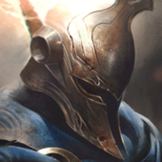

起手裝備
 長劍
長劍

星蝕→黑切後把史特拉克手套提前第三，死亡之舞排第四，適合單線進場後兼顧混合傷害；對物理傷害主導陣容才提前死亡之舞。不預設照搬三件穿透的打野方案。


五件成裝與鞋子分開列示；起手與核心是購買路線，不是額外佔用的成裝欄位。鞋子完成時機仍依對線壓力與回城金錢調整。


征服者、兇蠻、背水一戰、敏捷與骨甲保留，強化二技能快速展開換血；三技用於擋反打，不為延長征服者硬留。


潘森：閃現調整進退，點燃補短換血收尾與重創；沒有擊殺窗口時不要為點燃強行離開兵線。
加點優先：Q > W > E
改 Q>W>E，前三級改 Q、W、E：二級建立指定暈眩與強化普攻窗口；一技升滿後提高二技循環，三技先保留一點的防禦用途。15級表同步重排，不僅修改標題。
普攻或施放技能累積層數，疊滿後下一個基礎技能會獲得強化效果。
可快速刺擊或蓄力投擲，對低血量目標傷害更高，是主要消耗與收尾技能。｜7.2d：依生命觸發暴擊的門檻下調至 25%。
跳向目標並暈眩；強化後會追加多段普攻，能快速觸發裝備與被動效果。
舉盾阻擋正面傷害並向前攻擊，結束時再揮擊一次，兼具保命與反打。
躍向遠距指定區域並沿路造成傷害與緩速，用來支援邊線或搶先形成多打少。
強化二技後要穿插普攻回層，三技朝傷害來源舉盾，並非所有方向都免傷。
強化2技 → 連續普攻 → 1技 → 3技
滿層被動使用強化二技快速疊回層數，接一技爆發並以三技擋反打。
蓄力1技 → 2技 → 普攻 → 3技撤退
先以長矛消耗，抓到血量差後暈眩進場，打完用三技安全退出。
4技 → 2技 → 1技 → 3技
大絕落點盡量封住撤退路線，落地後立即暈眩主力並用三技承受集火。
一級用一技補兵消耗，二級補二技後才有可靠的指定暈眩窗口；三技用於承受反打。不要把一技投空後仍強行跳進敵方兵線。
星蝕→黑色切割者→史特拉克手套提供短爆發、降甲與進場保險；死亡之舞依物傷壓力接續。推線後才用大絕支援，避免無代價地送出整波兵與塔。
後期以抓單和點控核心為主，E 留來擋致命傷害而不是隨便補輸出。
墨菲特成裝後可削弱物理短爆發，關的聖霧會限制進場；推線支援比硬拚長戰可靠。
對局名單是機制與分路判斷，不代表固定勝率；需同時看雙方熟練度、兵線與陣容。
本站巴龍路 B：強化二技與一技短爆發提供前期壓力，大絕可把推線優勢轉支援；若沒取得節奏，中後期正面長打與持續清線較弱。評級維持功能型前中期選擇，不因打野推薦而上調。
星蝕→黑切後把史特拉克手套提前第三，死亡之舞排第四，適合單線進場後兼顧混合傷害；對物理傷害主導陣容才提前死亡之舞。不預設照搬三件穿透的打野方案。
對局名單是技能與換血條件的提示，不是7.3b勝率排名。先看敵方突進、關鍵防禦技能與兵線；裝備成形後重新評估，不能把前期有利當整場必勝。
以下情境替換以本頁7.3b五件成裝為基準。同一格多項建議擇一；鞋子由二級升三級，主動裝另占成裝格。
高
觸發：能持續命中有護盾目標時補破盾，護盾少不必固定買。
守護天使 → 巨蛇鋒牙
面對敵方護盾多時，將守護天使換成巨蛇鋒牙；先保留前三件核心，若替換核心位須確認目前死亡或輸出不足的原因。
面對敵方護盾多時，將守護天使換成巨蛇鋒牙；先保留前三件核心，若替換核心位須確認目前死亡或輸出不足的原因。
主動裝占成裝格；鞋子更換時整條升級路線一起更換。
高
觸發：先重創小件過渡，需要穩定維持時才替換完整成裝。
守護天使 → 生化龐克鏈鋸之劍
面對敵方回復多時，將守護天使換成生化龐克鏈鋸之劍；先保留前三件核心，若替換核心位須確認目前死亡或輸出不足的原因。
面對敵方回復多時，將守護天使換成生化龐克鏈鋸之劍；先保留前三件核心，若替換核心位須確認目前死亡或輸出不足的原因。
主動裝占成裝格；鞋子更換時整條升級路線一起更換。
高
觸發：保住進場容錯，但復活仍需要隊友掩護。
目前配置已提供部分被物理爆發所需功能；先按威脅調整購買順序，不為分類名稱強行多買一件。
主動裝占成裝格；鞋子更換時整條升級路線一起更換。
高
觸發：依主要魔法威脅調整，已有命脈裝時不再疊另一件命脈。
守護天使 → 自然之力
面對魔法威脅時，將守護天使換成自然之力；先保留前三件核心，若替換核心位須確認目前死亡或輸出不足的原因。
面對魔法威脅時，將守護天使換成自然之力；先保留前三件核心，若替換核心位須確認目前死亡或輸出不足的原因。
主動裝占成裝格；鞋子更換時整條升級路線一起更換。
高
觸發：二級鞋改水星之靴，三級鞋對應鎖鏈軍靴；韌性不縮短擊飛。
爆發之靴 → 水星之靴
魔法傷害及可縮短的控制占主導時，整條改水星之靴→鎖鏈軍靴；韌性不能縮短擊飛。
魔法傷害及可縮短的控制占主導時，整條改水星之靴→鎖鏈軍靴；韌性不能縮短擊飛。
主動裝占成裝格；鞋子更換時整條升級路線一起更換。
7.3d差異核對：本頁核對官方英雄／裝備差異與現行配置參照；未列的技能不表示已完成逐級實測。查看校正範圍。
本頁校正版本：7.3d；校正日期：2026-10-25。
參考來源標示版本：7.3c
本輪核對官方版本差異、道具/符文引用、五成裝與鞋線、逐級加點及情境替換一致性。Tier及玩法屬本站編輯判斷，不是官方排名或台服勝率；未公開的全級技能表不推算。
評級理由：7.3c 維持 B（本站判斷）。本站巴龍路 B：強化二技與一技短爆發提供前期壓力，大絕可把推線優勢轉支援；若沒取得節奏，中後期正面長打與持續清線較弱。評級維持功能型前中期選擇，不因打野推薦而上調。 7.3c 未改動此分路的英雄數值，沒有新證據只因版本號而升降。
Riot 官方資料 ↗ · Riot 官方資料 ↗ · Riot 官方資料 ↗ · Riot 官方資料 ↗ · WildRiftFire 參考攻略 ↗ · WildRiftFire 參考攻略 ↗ · Riot 官方資料 ↗ · wildriftcore.com ↗
7.3c 的直接英雄倍率改動屬符文大亂鬥；本召喚峽谷配置承接 7.3b。未把模式專屬增削轉為峽谷增削。
五件成裝、獨立鞋線、起手、核心、情境替換引用與一般符文列別均重新檢查；移除裝備不列入當前推薦。
歷史資料有後續調整時，以較新版本數值為準。
| 項目 | 調整前 | 調整後 |
|---|---|---|
| 基礎生命 | 690 | 660 |
| 基礎物防 | 52 | 48 |
| 每級生命成長 | 120 | 132 |